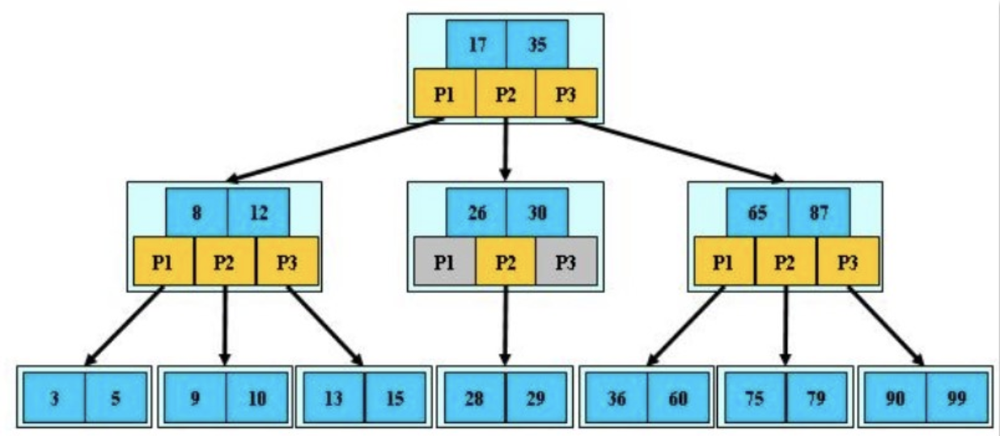
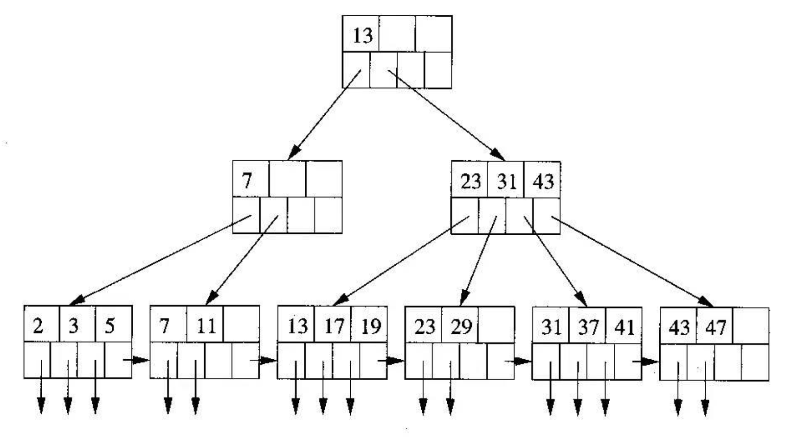

[TOC]
B Tree(多路搜索树)

关键字集合分布在整颗树中
任何一个关键字出现且只出现在一个结点中
搜索有可能在非叶子结点结束
其搜索性能等价于在关键字全集内做一次二分查找
磁盘相关
磁盘读取依靠的是机械运动，分为寻道时间、旋转延迟、传输时间三个部分，这三个部分耗时相加就是一次磁盘IO的时间，大概9ms左右。这个成本是访问内存的10w倍左右
预读: 每一次IO时，不仅仅把当前磁盘地址的数据加载到内存，同时也把相邻数据也加载到内存缓冲区中(程序局部性原理)
每次磁盘IO读取的数据我们称之为一页（page）。一页的大小与操作系统有关，一般为4k或者8k。这也就意味着读取一页内数据的时候，实际上发生了一次磁盘IO
数据库索引是存储在磁盘上，当表中的数据量比较大时，索引的大小也跟着增长，达到几个G甚至更多。当我们利用索引进行查询的时候，不可能把索引全部加载到内存中，只能逐一加载每个磁盘页，这里的磁盘页就对应索引树的节点
B+ Tree

红点表示是指向卫星数据的指针，指针指向的是存放实际数据的磁盘页，卫星数据就是数据库中一条数据记录
叶子节点中还有一个指向下一个叶子节点的next指针，所以叶子节点形成了一个有序的链表，方便遍历B+树
对比B树
所有数据存在叶子节点，其它节点不存储数据，只存储索引。那么同样大小的磁盘页可以容纳更多的节点元素，如此一来，相同数量的数据下，B+树就相对来说要更加矮胖些，磁盘IO的次数更少。
由于只有叶子节点才保存卫星数据，B+树每次查询都要到叶子节点；而B树每次查询则不一样，最好的情况是根节点，最坏的情况是叶子节点，没有B+树稳定
叶子节点形成有顺链表，范围查找性能更优
红黑树
查找，插入和删除等操作都是平均O(logn)时间内
从根到叶子的最长的可能路径不多于最短的可能路径的两倍长。结果是这个树大致上是平衡的。因为操作比如插入、删除和查找某个值的最坏情况时间都要求与树的高度成比例，这个在高度上的理论上限允许红黑树在最坏情况下都是高效的，而不同于普通的二叉查找树。
Hash
hash索引
哈希索引就是采用一定的哈希算法，把键值换算成新的哈希值，检索时不需要类似B+树那样从根节点到叶子节点逐级查找，只需一次哈希算法即可立刻定位到相应的位置，速度非常快
对比B+树
如果是等值查询，那么哈希索引明显有绝对优势，因为只需要经过一次算法即可找到相应的键值；当然了，这个前提是，键值都是唯一的。如果键值不是唯一的，就需要先找到该键所在位置，然后再根据链表往后扫描，直到找到相应的数据
如果是范围查询检索，这时候哈希索引就毫无用武之地了，因为原先是有序的键值，经过哈希算法后，有可能变成不连续的了，就没办法再利用索引完成范围查询检索
哈希索引也没办法利用索引完成排序，以及
like ‘xxx%’这样的部分模糊查询（这种部分模糊查询，其实本质上也是范围查询）哈希索引也不支持多列联合索引的最左匹配规则
B+树索引的关键字检索效率比较平均，不像B树那样波动幅度大，在有大量重复键值情况下，哈希索引的效率也是极低的，因为存在所谓的哈希碰撞问题（如：Java8
HashMap拉链法后又补充了红黑树转换）